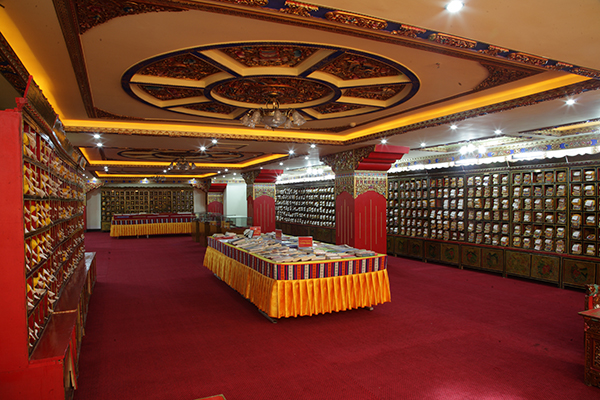
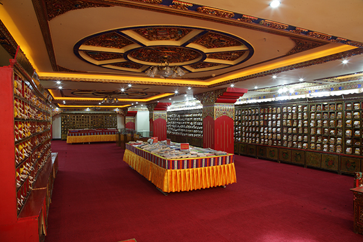
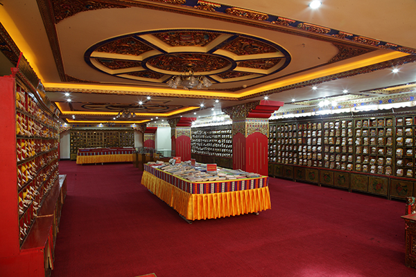

图集

 


3D模型
请使用“左键”旋转，“滚轮”缩放，“右键”移动
关于
网页代码编辑软件为WebStorm
3D建模适用软件Cinema 4D R16
3D模型展示基于github3D显示插件
Email:funteen@qq.com
Copyright©2017-2018 西藏大学 杨建. All Rights Reserved
“ 万千学子，藏大情深。”
基于综合性大学的特点，长期以来坚持按照“藏汉文并重、以藏学为特色、多学科全面建设”的原则均衡发展，经过六十余年的持续建设，
目前校本部新、老校区两个分馆纸质文献藏书总量达109.39万余册，其中，藏文图书3万余册，藏文木刻本2456函，汉文图书103万
册，汉文再版古籍1.6万册，西文图书0.5万余册，报刊合订本1.9万余册，馆藏光盘1万余张，建设了基于馆藏文献的“中国藏文文献
资源网”，本地存储电子图书、学术论文、教学资源等各类镜像数据近30TB，馆藏规模和质量居于自治区首位，此外，2007年还特别
收藏了西藏日喀则聂拉木县菩日村2002年农田改造时出土的自新中国成立以来我国境内出土年代最久远、藏量最多的1000多年前吐蕃
时期藏文写本“菩日文献”，其中，十世纪写本《大般若波罗蜜多经》和十世纪写本《大般若波罗蜜多经两万五千颂》先后于2010、
2016年入选第三批、第五批《国家珍贵古籍名录》，成为镇馆之宝。另有中国国家图书馆指定收藏的《中华再造善本》一套。

请使用“左键”旋转，“滚轮”缩放，“右键”移动
网页代码编辑软件为WebStorm
3D建模适用软件Cinema 4D R16
3D模型展示基于github3D显示插件
Email:funteen@qq.com
Copyright©2017-2018 西藏大学 杨建. All Rights Reserved